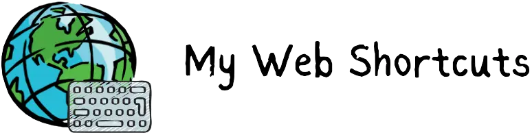
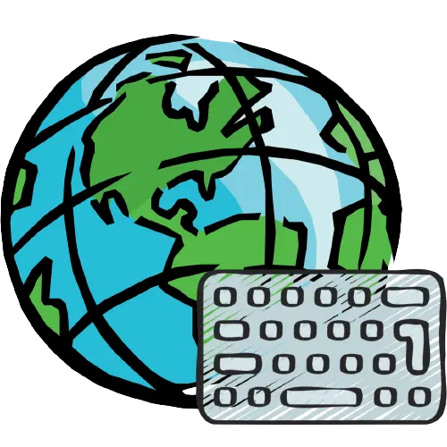
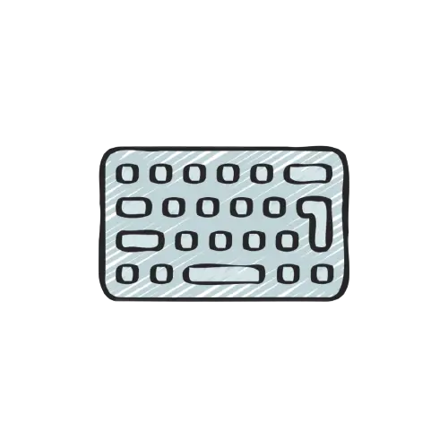

<!DOCTYPE html>
<html lang="en">

<head>
	<meta charset="UTF-8" />
	<meta name="viewport"
		  content="width=device-width, initial-scale=1.0" />
	<title>
		My Web Shortcuts - Open Source Browser Extension for productivity &
		accessibility
	</title>

	<script src="https://kit.fontawesome.com/0617272442.js"
			crossorigin="anonymous"></script>

	<link rel="shortcut icon"
		  href="assets/media/myWebShortcutsLogo_transparent.webp"
		  type="image/x-icon" />

	<!-- Meta Tags for SEO -->
	<meta name="description"
		  content="Create custom shortcuts for the web" />
	<meta name="keywords"
		  content="create shortcuts in a website, custom keyboard shortcuts in chrome, custom keyboard shortcuts in browser, custom keyboard shortcuts in firefox, click on elements using keyboard, , click button using keyboard keys, click links using keyboard keys, chrome extension for shortcuts, , best chrome extensions for productivity, accessibility chrome extensions, my web shortcuts, web shortcuts, prakhar tiwari, prakhartiwari0, web developer, prakashh technologies" />
	<meta name="author"
		  content="Prakhar Tiwari" />


		  <!-- Open Graph Meta Tags for Social Media -->
<meta property="og:title" content="My Web Shortcuts - Open Source Browser Extension for productivity & accessibility" />
<meta property="og:description" content="Introducing My Web Shortcuts 🌏💻 — your new best friend for browsing!
		  A cool free & open-source extension that lets you create your own keyboard shortcuts for any website. No more endless clicking around; now you can do actions or click things using simple keyboard strokes." />
<meta property="og:image" content="https://www.mywebshortcuts.xyz/assets/media/social_banner.png" />
<meta property="og:image:alt" content="My Web Shortcuts Preview Image" />
<meta property="og:image:width" content="1280" />
<meta property="og:image:height" content="640" />
<meta property="og:url" content="https://www.mywebshortcuts.xyz" />
<meta property="og:type" content="website" />

<!-- Twitter Meta Tags -->
<meta name="twitter:card" content="summary_large_image" />
<meta name="twitter:title" content="My Web Shortcuts - Open Source Browser Extension for productivity & accessibility" />
<meta name="twitter:description" content="Introducing My Web Shortcuts 🌏💻 — your new best friend for browsing!
		  A cool free & open-source extension that lets you create your own keyboard shortcuts for any website. No more endless clicking around; now you can do actions or click things using simple keyboard strokes." />
<meta name="twitter:image" content="https://www.mywebshortcuts.xyz/assets/media/social_banner.png" />


	<!-- CSS Files links -->
	<link rel="stylesheet"
		  href="assets/styles/root.css" />
	<link rel="stylesheet"
		  href="assets/styles/homepage/index.css" />
	<link rel="stylesheet"
		  href="assets/styles/homepage/topArea.css" />
	<link rel="stylesheet"
		  href="assets/styles/homepage/heroSection.css" />
	<link rel="stylesheet"
		  href="assets/styles/homepage/aboutSection.css" />
	<link rel="stylesheet"
		  href="assets/styles/homepage/faqSection.css" />
	<link rel="stylesheet"
		  href="assets/styles/homepage/reviewSection.css" />
	<link rel="stylesheet"
		  href="assets/styles/homepage/sponsorSection.css" />
	<link rel="stylesheet"
		  href="assets/styles/homepage/footer.css" />
</head>

<body>
	<div class="bgImage-wrapper animeBoyKeyboardImage-wrapper">
		
	</div>

	<div class="topArea">
		<div class="topLogoImg-wrapper">
			<!-- 
			
		</div>
	</div>

	<div class="quickAccess-wrapper">
		<details class="quickAccess-details"
				 title="Quick Links">
			<summary class="quickAccess-summary"
					 title="Quick Links">
				<i class="fa-compass fa-solid"></i>
			</summary>

			<button class="switchMode greenButtonFilled">
				<span class="darkOn">
					<i class="fa-circle-half-stroke fa-solid"></i>Light Mode
				</span>
				<span class="darkOff">
					<i class="fa-circle-half-stroke fa-solid"></i>Dark Mode
				</span>
			</button>

			<ul class="quickAccess-ul">
				<li class="quickAccess-li">
					<a href="#about"
					   class="aboutLink" title="About My Web Shorcuts"><i class="fa-info-circle fa-solid"></i>About</a>
				</li>
				<li class="quickAccess-li">
					<a href="#faqs"
					   class="faqsLink" title="Frequently Asked Questions"><i class="fa-question fa-solid"></i> FAQs</a>
				</li>
				<li class="quickAccess-li">
					<a href="https://mywebshortcuts.xyz/guide"
					   class="usageGuideLink" title="Usage Guide"><i class="fa-book fa-solid"></i>Usage Guide</a>
				</li>
				<li class="quickAccess-li">
					<a href="#reviews"
					   class="reviewsLink" title="Reviews"><i class="fa-comments fa-solid"></i>Reviews</a>
				</li>
				<li class="quickAccess-li">
					<a href="http://github.mywebshortcuts.xyz"
					   class="gitHubLink"
					   target="_blank" title="GitHub Repository"><i class="fa-github fa-brands"></i>GitHub</a>
				</li>
				<li class="quickAccess-li">
					<a href="http://sponsor.mywebshortcuts.xyz"
					   class="sponsorLink"
					   target="_blank" title="Sponsor My Web Shorcuts"><i class="fa-hand-holding-dollar fa-solid"></i>Sponsor</a>
				</li>
				<li class="quickAccess-li">
					<a href="https://twitter.com/mywebshortcuts"
					   class="twitterLink"
					   target="_blank"><i class="fa-twitter fa-brands"></i>Twitter</a>
				</li>
			</ul>
		</details>
	</div>


	<button class="starRepoButton"><i class="fa-star fa-solid"></i> STAR ME!</button>

	<div class="hero-wrapper">
		<h1 class="taglineHeading">
			create shortcuts <br />
			that <span>you</span> need
		</h1>

		<div class="installationLinks-wrapper">
			<div class="chromeWebstore-wrapper">
				<a href="https://chromewebstore.google.com/detail/eieokkopejddkfnfioklcjabmhpbmgke"
				target="_blank"
				   class="chromeWebstoreLink links">
					<div class="browserLogo-wrapper">
						
					</div>
					<span class="chromeWebstoreLinkSpan linksSpan">Install Extension</span>
				</a>
			</div>

			<div class="firefoxAddon-wrapper">
				<a href="#"
				   class="firefoxLink links">
					<div class="browserLogo-wrapper">
						
					</div>
					<span class="chromeWebstoreLinkSpan linksSpan">Firefox Addon</span>
				</a>
			</div>
			<div class="productHunt-wrapper">
				<a class="productHuntLink links"
				href="https://www.producthunt.com/posts/my-web-shortcuts?utm_source=badge-featured&utm_medium=badge&utm_souce=badge-my&#0045;web&#0045;shortcuts" target="_blank"></a>
			</div>


		</div>

	</div>

	<dialog class="subscribeDialog">
		<div class="leftSideDiv"></div>
		<div class="rightSideDiv">
			<h2>
				Stay informed about <span>My Web Shortcuts</span>—subscribe to get updates 
			</h2>
			<button class="closeSubscribeDialogButton actionButton">
				<i class="fa-close fa-solid"></i>
			</button>
			<iframe src="https://prakashhtech.substack.com/embed"
					id="prakashhTechSubtackIframe"
					frameborder="0"
					scrolling="no"></iframe>
		</div>
	</dialog>

	<div class="topBgCircle bgCircle-wrapper green"></div>
	<div class="leftBgCircle bgCircle-wrapper blue"></div>

	<div id="about"
		 class="aboutSection sections">
		 <div class="iframe-wrapper">

		<iframe 
		src="https://www.youtube-nocookie.com/embed/eXsq_QK9MaI?si=pcuVftATiQOG1suq&amp;controls=1&loop=1&hd=1&rel=0 "
				title="YouTube video player"
				class="youtubeVideoIframe"
				frameborder="0"
				allow="accelerometer; autoplay; clipboard-write; encrypted-media; gyroscope; picture-in-picture; web-share"
				allowfullscreen></iframe>
		 </div>
		<div class="aboutText-wrapper">
			<span class="aboutTextSpan">
				 Meet <strong>My Web Shortcuts</strong> - Your tool for personalized browsing! This <strong>free, open-source browser extension</strong> lets you <strong>create custom keyboard shortcuts to click on element in any website</strong>, boosting productivity by enabling swift actions without constant cursor movement. Enjoy a more personalized and efficient browsing experience!
			</span>
		</div>
	</div>

	<div id="faqs"
		 class="faqSection sections">
		 
		<h2>Frequently Asked Questions</h2>

	<div class="animatedLogo-wrapper">
		
		
	</div>
	
		<div class="faqs-wrapper">
			<div class="detsAndSums-wrapper">
				<details class="questionAndAnswerDetails">
					<summary class="questionSummary">
						First of all, what is My Web Shortcuts?
					</summary>
					<div class="answer-wrapper">
						<span class="answerSpan">
							Good First Question! <br> 
							My Web Shortcuts is a browser extension built for <strong>clicking (& more) on elements in a website using keyboard keys</strong>. It let's you select any element (button, link, etc.) on a website, and asks you for the shortcut key you want to use to click on it. Now, whenever you click on the key, 
							that element will be clicked.
						</span>
					</div>
				</details>
			</div>
		</div>


		<div class="faqs-wrapper">
			<div class="detsAndSums-wrapper">
				<details class="questionAndAnswerDetails">
					<summary class="questionSummary">
						What are some possible use cases of this?
					</summary>
					<div class="answer-wrapper">
						<span class="answerSpan">
							Well, it depends on you and the websites you visit. We aren't really sure how many possible use cases there can be, but it's certain that navigating and accessing the web will be much faster with this tool. <br>  
							Most of the times, you will be creating shortcuts for the websites you often go to, & elements you often click on. Previously you used to drag your cursor every time to click on it, but now, you will simply press the shortcut key. 
							
						</span>
					</div>
				</details>
			</div>
		</div>


		<div class="faqs-wrapper">
			<div class="detsAndSums-wrapper">
				<details class="questionAndAnswerDetails">
					<summary class="questionSummary">
						Is it paid?
					</summary>
					<div class="answer-wrapper">
						<span class="answerSpan">
							My Web Shortcuts is 100% free & open source. We do need to your support to keep working on it, so if you are capable, please considering supporting us. <br>
						</span>
					</div>
				</details>
			</div>
		</div>

		<div class="faqs-wrapper">
			<div class="detsAndSums-wrapper">
				<details class="questionAndAnswerDetails">
					<summary class="questionSummary">
						Can I sync the shortcuts on my other browsers and computers?
					</summary>
					<div class="answer-wrapper">
						<span class="answerSpan">
							We're currently in the beginning of it's development, so syncing feature is not available. However, we will be adding an option to import/export shortcuts. <br>
							Please note that the syncing feature will require us to pay for the recurring cloud bills, and therefore, we would need to make that feature a paid one. If we're able to get a lot of support from the community, we can make it free upto a limit.  
						</span>
					</div>
				</details>
			</div>
		</div>


		<div class="faqs-wrapper">
			<div class="detsAndSums-wrapper">
				<details class="questionAndAnswerDetails">
					<summary class="questionSummary">
						I'm a web developer & interested in contributing to the project.  
					</summary>
					<div class="answer-wrapper">
						<span class="answerSpan">
							We're pleased to know that! Please go to <a href="https://github.com/mywebshortcuts">github.com/mywebshortcuts</a> to know how you can contribute.
						</span>
					</div>
				</details>
			</div>
		</div>


	</div>

		

	<div class="sponsorSection" id="sponsors">
		<h2>Sponsor <span>My Web Shortcuts</span>  &hearts;</h2>
		<span class="sponsorRequestSpan">This project is 100% free and open source. If you love this tool and want to support it's development, kindly sponsor us.</span>


		<a href="http://sponsor.mywebshortcuts.xyz"
			class="sponsorLink links"
			target="_blank"><i class="fa-hand-holding-dollar fa-solid"></i> <span>Sponsor Project</span></a>
	</div>


	<div id="reviews"
		 class="reviewSection sections">
		<h2 class="reviewsHeading">What are people saying?</h2>
		<span class="reviewsNote">&lpar;These are not reviews of the extension but <strong>people's response to the idea of it</strong>, we will have actual reviews once people start using My Web Shortcuts.&rpar;
		</span>


		<div class="image-container">
				<div>
					
				</div>
				<div>
					
				</div>
				<div>
					
				</div>
				
				<div>
					
				</div>

				<div><a href="https://x.com/GrahamTheDev/status/1712516893699969406?s=20" target="_blank">

					
				</a>
				</div>
				<div>
					<a href="https://x.com/shubhstwt/status/1712793190858895389?s=20" target="_blank">

						
					</a>
				</div>
				
				<div>
					<a href="https://www.linkedin.com/posts/varun-bhabhra_first-demo-of-my-web-shortcuts-invitation-activity-7118431031942164480-uzkp?utm_source=share&utm_medium=member_desktop" target="_blank">
					
						 </a>
				</div>
				<div>
					
				</div>
				<div>

					
				</div>

		</div>
	</div>

	

	<footer>

		<a href="/pages/privacy.html" class="footerLinks" target="_blank"><i class="fa-file fa-solid"></i>Privacy Policy</a>
		<a href="mailto:contact@mywebshortcuts.xyz" class="footerLinks" target="_blank"><i class="fa-envelope fa-solid"></i>Email us</a>
		<a href="https://twitter.com/mywebshortcuts" class="footerLinks" target="_blank"><i class="fa-twitter fa-brands"></i>Twitter</a>
		<a href="https://github.com/mywebshortcuts" class="footerLinks" target="_blank"><i class="fa-github fa-brands"></i>GitHub</a>


		<span class="creationText">A Creation of <a href="https://heyprakhar.com/" target="_blank" class="prakharLink">Prakhar</a> & Contributors</span>

		<span class="copyrightText">
			&#169; 2023 <a href="http://prakashhtech.mywebshortcuts.xyz" class="prakashhTechLink" target="_blank">Prakashh Technologies</a>
		</span>
	</footer>

	<button class="scrollToTopButton">
		<i class="fa-angle-up fa-solid"></i>
	</button>
</body>

<script src="script.js"
		defer></script>

</html>